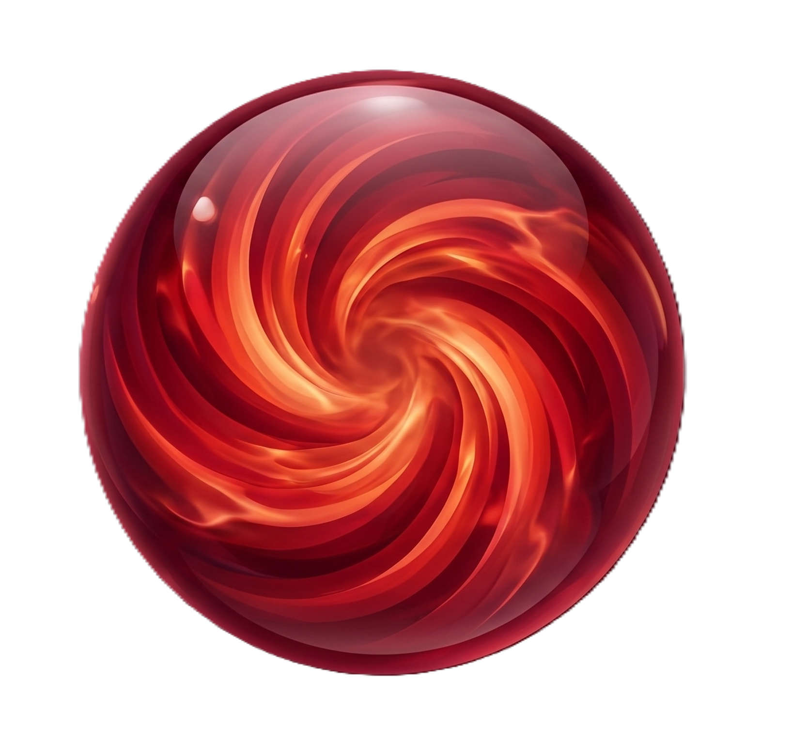

MARS is the research orchestration project that defines and validates a gated, reproducible lifecycle for experiment design, execution, evidence adjudication, and paper integration.
To ensure rigor, MARS utilizes canonical, reusable definitions and templates. We structure research into executable phases—designing experiments and extracting high-fidelity data that fundamentally maps the unknown edges of agentic systems.